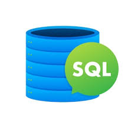
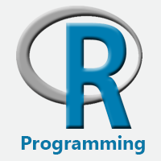
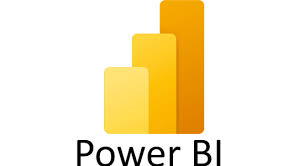

Monika Mangla
I'm a Data Analyst AspirantAbout Me
I am detail-oriented Analyst with a strong background in data analysis, statistical methods, and programming. Proven expertise in leveraging Python, SQL, Tableau, Power Bi and Excel to transform complex data into actionable insights. Adapt at conveying technical concepts clearly and improving data-driven decision-making.Recently I have trained on how to analyze large datasets and have created great projects which are mention below
Programming Languages
ProficientData Visualization
SkilledDatabase Management
ProficientData Cleaning
ProficientMachine Learning
BeginnerStatistical Knowledge
Skilled

Tools And Language
Python

SQL

Excel

R

Power Bi

Tableau

Pandas

Numpy
Jupyter
Get In Touch
Monika Mangla
Please free feel to contact me on my social handles
 Click to send mail
Click to send mail
 LinkedIn Profile
LinkedIn Profile
 Github
Github
 Kaggle
Kaggle